← All daily digests · ← Report index · ← Previous · Next →
Authors: Tabea Herrmann, Felix Fritzsch, Arnd Bäcker
Type: theory · Category: statistical mechanics · PDF: https://arxiv.org/pdf/2604.27749v1
Analysis basis: full PDF text, analyzed in chunks
Topic relevance: 🔥 entanglement & information structure 4/5 · 🔥 non-equilibrium dynamics 4/5 · scars & prethermalization 2/5
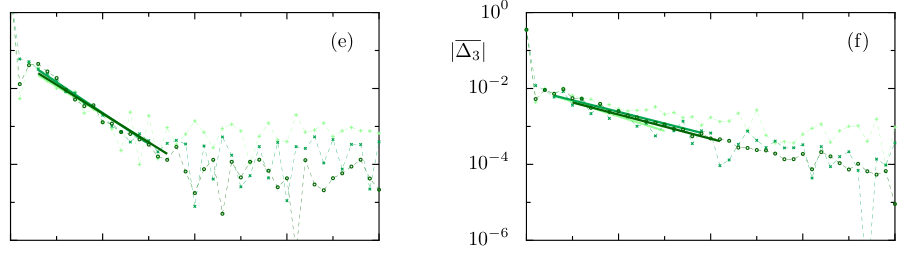
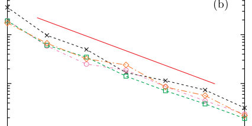
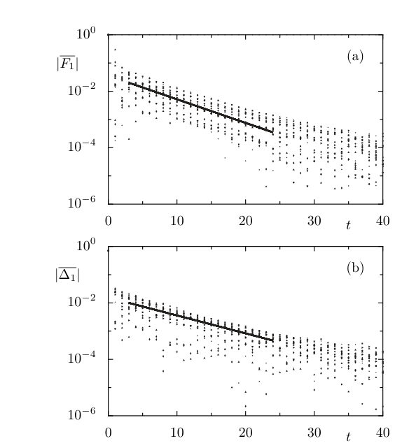
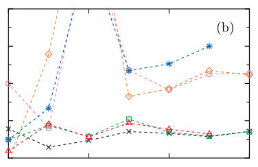
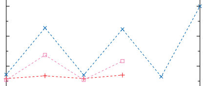
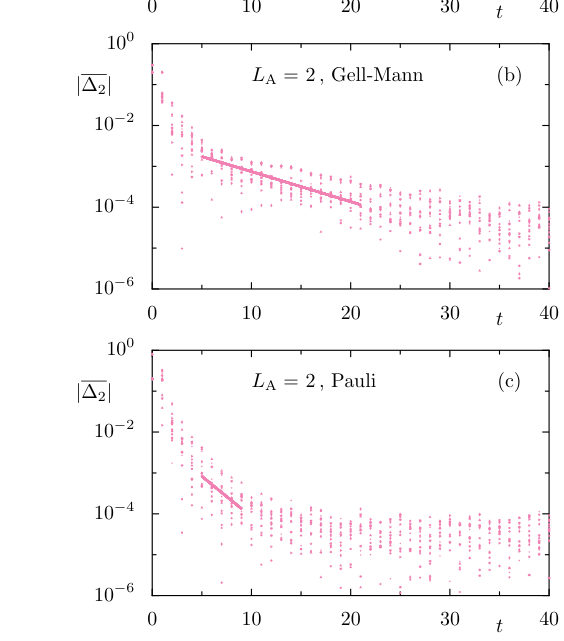
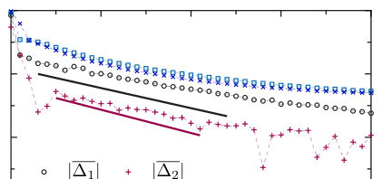
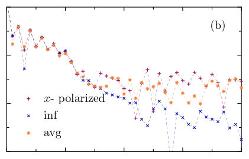
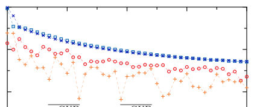
Summary. The paper investigates whether higher-order correlations or the approach to state designs happens faster in chaotic quantum systems. It finds that while both processes are exponential, full thermalization (decay of OTOCs) accelerates with higher orders, making it faster than deep thermalization.
Why it may be interesting. It provides a new quantitative comparison between two fundamental ways many-body systems reach equilibrium, offering insights into the hierarchy of timescales for information scrambling and state design formation.
Main problem. Comparing the relaxation timescales of two extensions of the Eigenstate Thermalization Hypothesis (ETH): full thermalization (higher-order correlation functions) and deep thermalization (approach of projected ensembles to Haar-random states).
Main result. Both processes exhibit exponential relaxation, but full thermalization is faster than deep thermalization at higher orders, as higher-order OTOCs decay at increasing rates while deep thermalization rates remain roughly constant.
Method. Large-scale numerical simulations of a kicked Ising chain combined with theoretical frameworks including Free Probability Theory, Random Matrix Theory, and the replica picture.
Model / system. A 1D kicked mixed-field Ising spin chain subject to periodic (Floquet) dynamics with random longitudinal fields, serving as a paradigme for chaotic many-body quantum dynamics.
Key observables. Higher-order Out-of-Time-Order Correlators (OTOCs) for full thermalization and moments of the projected ensemble for deep thermalization.
Important parameters / regimes. Order of the correlation function (k), subsystem size (LA), system size (L), and the chaotic/ergodic regime.
Assumptions / limitations. The system is in a chaotic regime where it acts as its own bath; calculations often utilize the infinite temperature state or pure states.
Figures summary. Figures show the time dependence of OTOCs and ensemble moments exhibiting exponential decay and saturation at plateaus; they also illustrate the even-odd effect in deep thermalization and the scaling of fluctuations with Hilbert space dimension.
Paper structure. The paper defines the mathematical distinction between full and deep thermalization, proposes a unified comparison framework via k-replica observables, uses the kicked Ising chain as a case study to compare decay rates, and employs Random Matrix Theory to explain late-time scaling and fluctuations.
Isolated quantum systems typically approach thermal equilibrium as described by the Eigenstate Thermalization Hypothesis (ETH). Going beyond this involves either higher order correlators (full thermalization) or the formation of state designs, i.e., the approach of moments of state ensembles after a projective measurement towards thermal equilibrium (deep thermalization). We compare these two extensions of ETH using extensive numerical studies within a paradigmatic model for chaotic many-body quantum dynamics. For this we find exponential relaxation for both extensions: For deep thermalization all moments relax with the same rate, which approximately equals the relaxation rate of the autocorrelation function captured by ETH. In contrast, higher order correlation functions in full thermalization approach equilibrium faster. This means that at higher orders full thermalization is faster than deep thermalization.
Authors: Farrokh Labib, David Nicholaeff, Vincent Russo, William J. Zeng
Type: both · Category: quantum information and computing · PDF: https://arxiv.org/pdf/2604.27824v1
Analysis basis: full PDF text, analyzed in chunks
Topic relevance: 🔥 QC/QI experiment 4/5 · entanglement & information structure 3/5 · quantum measurements 2/5
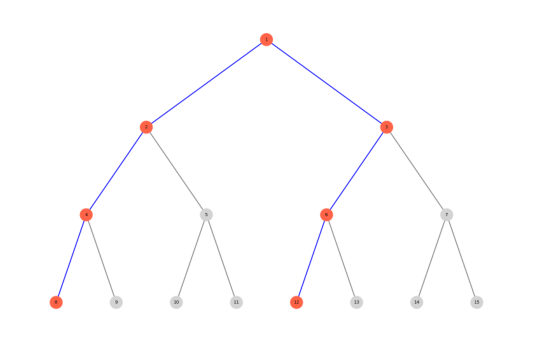
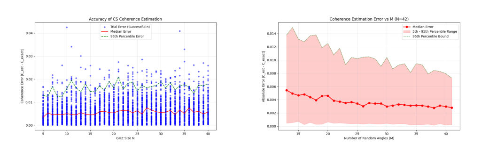
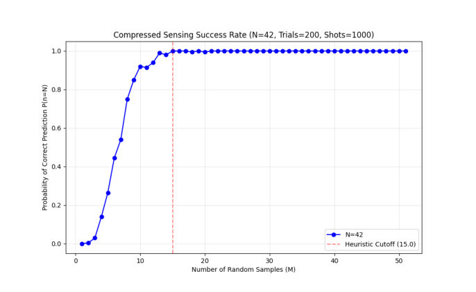
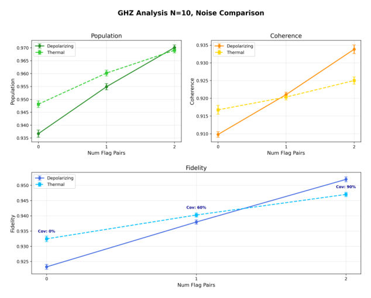
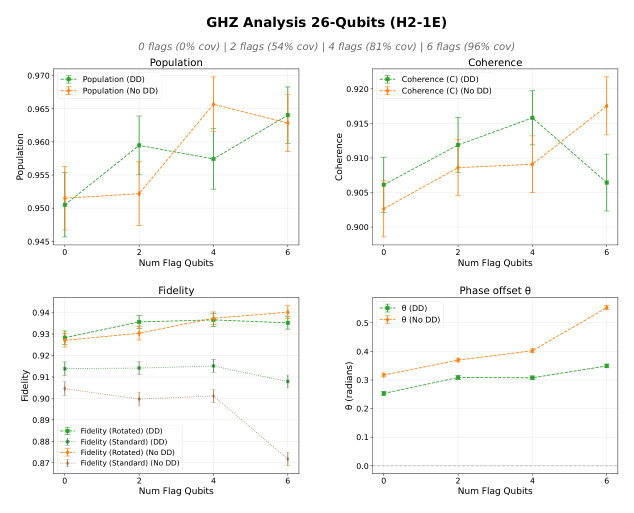
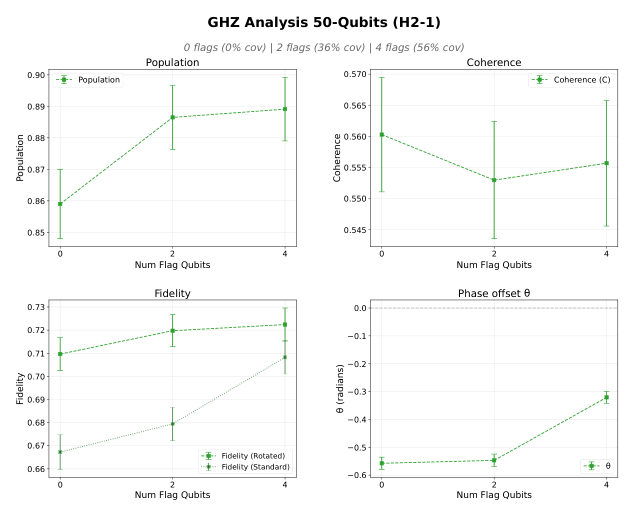
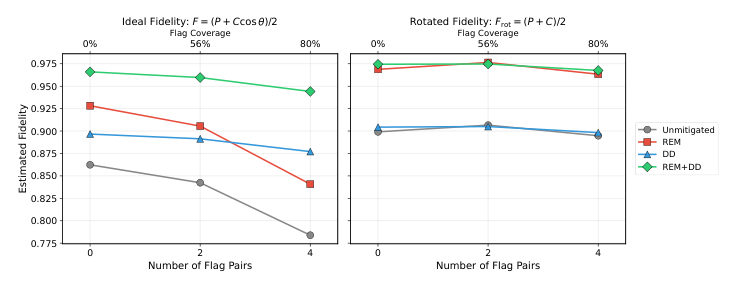
Summary. This paper introduces a compressed sensing approach to drastically reduce the number of measurements needed to verify the fidelity of large GHZ states. By treating the parity signal as sparse, the method achieves logarithmic scaling with system size. The protocol is validated on both simulators and real trapped-ion hardware, demonstrating robustness through integrated error detection and mitigation.
Why it may be interesting. This work is highly relevant for researchers in open quantum systems and quantum optics as it addresses the practical challenges of verifying entanglement in the presence of noise and provides scalable protocols for characterizing many-body states.
Main problem. Efficiently estimating the fidelity of large-scale multipartite GHZ states while overcoming the prohibitive measurement overhead of standard tomography and the high sampling requirements of traditional methods.
Main result. The proposed compressed sensing protocol achieves a logarithmic scaling of measurement overhead (M proportional to log N) and maintains high accuracy in reconstructing the parity oscillation signal, even in noisy hardware environments.
Method. Compressed sensing is applied to the parity oscillation signal in the Discrete Cosine Transform (DCT) basis, combined with a flag qubit strategy for error detection and readout error mitigation (REM) for bias correction.
Model / system. The study focuses on N-qubit GHZ states prepared via a logarithmic-depth binary tree circuit, evaluated using both quantum simulators and Quantinuum's trapped-ion hardware (H2-1).
Key observables. Fidelity (F), population (P), coherence (C), parity oscillation signal P(phi), and phase offset (theta).
Important parameters / regimes. Number of qubits (N), number of measurement samples (M), coverage ratio of flag qubits, and error rates (single-qubit p1q and two-qubit p2q).
Assumptions / limitations. Assumes all-to-all connectivity for effective flag qubit placement and assumes the parity signal is sparse in the DCT basis.
Figures summary. Figure 1 shows the binary tree structure and flag qubit coverage; Figure 2 shows the bounded error of coherence estimation; Figure 3 shows the success probability of frequency recovery vs. number of samples; Figure 4 and 5 demonstrate the impact of flag qubits on population and rotated fidelity.
Paper structure. The paper introduces the GHZ fidelity problem, describes the compressed sensing and flag qubit methodology, presents numerical simulations, details hardware implementation on trapped-ion systems, and discusses error mitigation strategies.
Accurately characterizing multipartite entangled states is a critical challenge in quantum information processing. In this work, we focus on applying compressed sensing techniques to efficiently estimate the fidelity of Greenberger-Horne-Zeilinger (GHZ) states. By exploiting the inherent sparsity of these states, our compressed sensing protocol drastically reduces the measurement overhead traditionally required for state verification while maintaining high accuracy. To evaluate the practical performance of this approach, we test the protocol on GHZ states using both quantum simulators and Quantinuum's trapped-ion hardware. Furthermore, we implement error detection techniques during our hardware evaluations, demonstrating the robustness and viability of compressed sensing for fidelity estimation in noisy experimental environments.
Authors: Daniele Iannotti, Beatrice Magni, Riccardo Cioli, Alioscia Hamma, Xhek Turkeshi
Type: theory · Category: quantum information and computing · PDF: https://arxiv.org/pdf/2604.27049v1
Analysis basis: abstract only; PDF text extraction failed or PDF unavailable
Topic relevance: 🔥 entanglement & information structure 4/5 · non-equilibrium dynamics 3/5 · non-equilibrium universality 2/5
Summary. The paper introduces a computationally efficient method to calculate non-local magic in fermionic Gaussian states using only two-point correlation functions. This allows for the study of magic scaling in large systems, such as the XY model and during quantum quenches, and enables experimental estimation via shadow tomography.
Why it may be interesting. It provides a scalable, efficient way to quantify a complex resource (non-local magic) in many-body systems using only local measurements, which is highly relevant for characterizing large-scale quantum processors and non-equilibrium dynamics.
Main problem. Evaluating non-local magic, which quantifies irreducible nonstabilizerness tied to entanglement, is computationally prohibitive due to the need for minimization over the full Hilbert space.
Main result. The authors derive a closed-form expression for non-local stabilizer entropies of fermionic Gaussian states that can be computed in polynomial time using Majorana covariance matrices.
Method. The study utilizes the properties of fermionic Gaussian states and Majorana covariance matrices to bypass Hilbert space minimization, applying the framework to random states, the XY model, and quantum quenches.
Model / system. The paper focuses on fermionic Gaussian states, specifically examining the XY model at its quantum critical point and out-of-equilibrium quantum quenches.
Key observables. Non-local stabilizer entropies, Majorana covariance matrix eigenvalues, and two-point correlation functions.
Important parameters / regimes. Quantum critical point of the XY model, random state regimes, and out-of-equilibrium quench dynamics.
Assumptions / limitations. The derivation is specifically applicable to fermionic Gaussian states and local Gaussian unitaries.
Paper structure. The paper introduces the problem of non-local magic, presents a new closed-form expression for Gaussian states, applies this to random states and the XY model, discusses quasiparticle-based magic generation in quenches, and concludes with experimental implementation via shadow tomography.
Entanglement and magic are fundamental resources that capture the complexity of quantum many-body systems. Non-local magic isolates the irreducible nonstabilizerness intrinsically tied to entanglement. However, evaluating this quantity generally requires a prohibitive minimization over the full Hilbert space, making it computationally inaccessible beyond a few qubits. Here, we overcome this bottleneck by suggesting a closed-form expression for the non-local stabilizer entropies of fermionic Gaussian states over local Gaussian unitaries, which can be evaluated in polynomial time directly from the eigenvalues of the reduced Majorana covariance matrix. We apply this framework to characterize fermionic non-local magic across diverse physical regimes: we derive an exact Page-like curve for typical random states, reveal logarithmic scaling at the quantum critical point of the XY model, and establish a quasiparticle picture for magic generation during out-of-equilibrium quantum quenches. Crucially, because our result relies solely on two-point correlation functions, it provides a scalable route for the experimental estimation of fermionic non-local magic in large-scale quantum processors via fermionic shadow tomography.
Authors: Mario Collura, Benjamin Béri, Emanuele Tirrito
Type: theory · Category: quantum information and computing · PDF: https://arxiv.org/pdf/2604.27055v1
Analysis basis: full PDF text, analyzed in chunks
Topic relevance: 🔥 entanglement & information structure 4/5 · non-equilibrium dynamics 3/5 · non-equilibrium universality 2/5
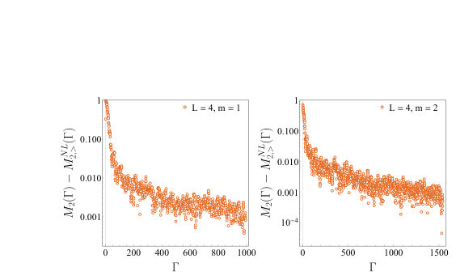
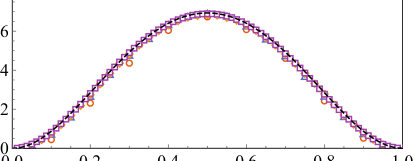
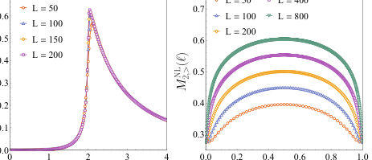
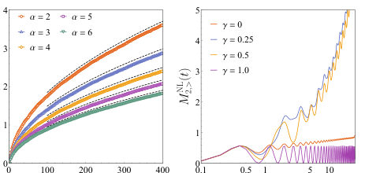
Summary. This paper introduces a method to quantify the irreducible nonstabilizerness of bipartite Gaussian states. It provides an analytical bound linked to the entanglement spectrum and explores how this 'nonlocal magic' behaves during phase transitions and quantum evolution.
Why it may be interesting. It provides a new way to quantify non-classicality in many-body systems and reveals a striking separation between the growth of entanglement and nonstabilizerness in certain integrable models, which is highly relevant for many-body dynamics.
Main problem. Quantifying 'nonlocal magic' (irreducible nonstabilizerness) in bipartite free fermion states and understanding its behavior in random ensembles, topological phases, and quantum dynamics.
Main result. The authors derive a closed-form upper bound for nonlocal magic based on the entanglement spectrum and show it is tight for Gaussian unitaries. They also demonstrate that nonlocal magic peaks at critical points in the Kitaev chain and grows diffusively in random circuits.
Method. Analytical derivation using the alpha-stabilizer Renyi entropy, random matrix theory (Jacobi ensemble), and numerical benchmarking via simulated annealing over local Gaussian unitary orbits.
Model / system. Pure fermionic Gaussian states, including the Kitaev chain, the XY chain, and Gaussian Haar ensembles, as well as random brick-wall matchgate circuits.
Key observables. Nonlocal magic (nonstabilizerness), alpha-stabilizer Renyi entropy (alpha-SRE), entanglement spectrum (singular values of the covariance matrix), and entanglement growth.
Important parameters / regimes. Bipartition fraction (l), chemical potential (mu), anisotropy parameter (gamma), and time evolution (t).
Assumptions / limitations. The primary analytical results and the derived tight bound are restricted to the manifold of Gaussian states.
Figures summary. Figure 1 shows a simulated-annealing benchmark where the minimized magic approaches the analytical bound without crossing it. Figure 2 shows the convergence of averaged nonlocal Gaussian magic to a thermodynamic prediction.
Paper structure. The paper introduces the concept of nonlocal magic, derives an analytical bound using the entanglement spectrum, verifies the bound's tightness via simulated annealing, extends the analysis to random ensembles using random matrix theory, and finally investigates the dynamics and phase transitions in specific models like the Kitaev and XY chains.
Nonlocal magic quantifies the irreducible nonstabilizerness of a bipartite quantum state after optimizing over local basis changes. We study nonlocal magic for pure fermionic Gaussian states, and derive a simple closed-form entanglement spectrum bound in terms of the singular values of the subsystem-restricted covariance matrix. We benchmark our result against simulated annealing over local Gaussian unitary transformations, which supports optimality along the full local Gaussian orbit. For states drawn from the Gaussian Haar ensemble, we show that the average nonlocal magic is extensive and determine its thermodynamic limit using random matrix theory for the appropriate circular unitary ensemble. We also study Gaussian ground states, focusing on the Kitaev chain, and find that nonlocal magic is suppressed deep in both trivial and topological phases and peaks near the critical points. Finally, we investigate Gaussian evolution via random circuits and in quenches with the XY chain. For random circuits, we find that nonlocal magic grows diffusively, while in the XY chain the XX limit reveals a striking separation between nonlocal magic and entanglement.
Authors: Biel Pons Zaragoza, Junaid Khan, Rohit Sarma Sarkar, Sahar Ben Rached, Carmen G. Almudever, Eduard Alarcon, Sergi Abadal
Type: theory · Category: quantum information and computing · PDF: https://arxiv.org/pdf/2604.27664v1
Analysis basis: full PDF text, analyzed in chunks
Topic relevance: 🔥 methods for driven-dissipative 4/5 · correlated / nonlocal dissipation 2/5 · non-equilibrium dynamics 2/5
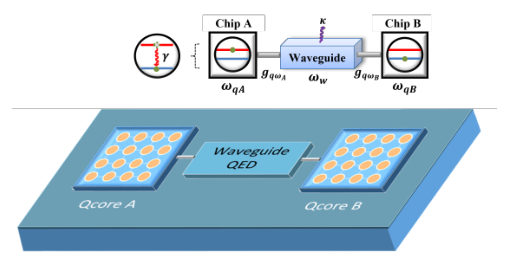
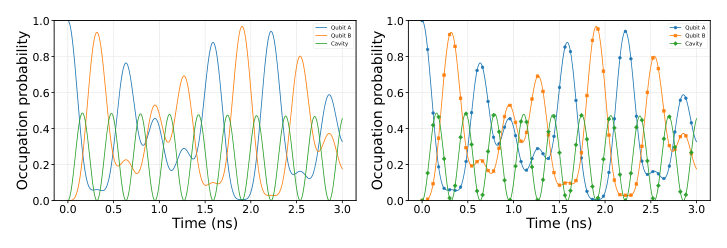
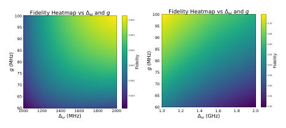
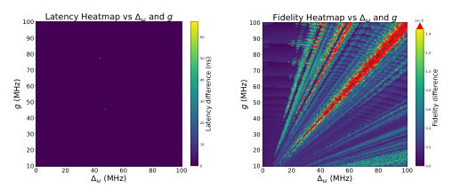
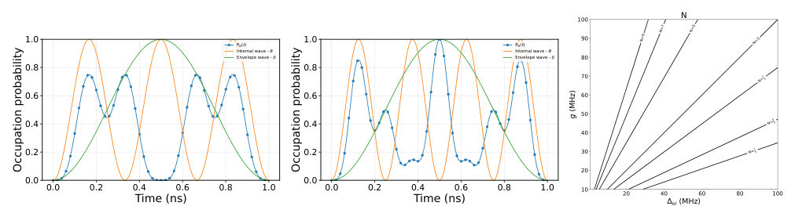
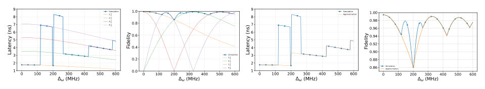
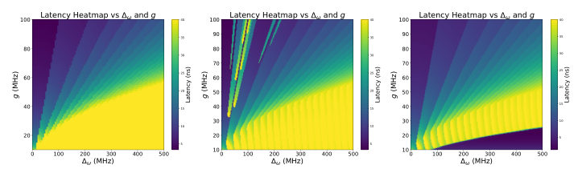
Summary. This paper presents an analytical method for rapidly simulating quantum state transfer in multi-core quantum architectures. By replacing expensive numerical simulations with closed-form expressions, the authors enable efficient large-scale parameter sweeps to optimize the trade-off between fidelity and latency. The approach accurately predicts complex phenomena like interference-induced low-fidelity regions.
Why it may be interesting. It provides a highly efficient analytical tool for studying open quantum system dynamics and interference-induced fidelity drops, which is directly applicable to designing scalable quantum networks and interconnects.
Main problem. Optimizing quantum state transfer in multi-core architectures is hindered by the high computational cost of numerical simulations and the difficulty of balancing fidelity against latency.
Main result. The authors derive an analytical framework that is two orders of magnitude faster than standard numerical solvers, enabling rapid design space exploration and the identification of optimal operating points.
Method. The study uses the Monte Carlo wave-function method and a non-Hermitian effective Hamiltonian approach to derive closed-form analytical expressions for qubit occupation probabilities.
Model / system. A two-qubit system (chips A and B) connected via a waveguide-mediated interconnect, modeled using a Jaynes-Cummings-type Hamiltonian and the Lindblad master equation.
Key observables. Qubit occupation probabilities, transfer fidelity, and latency.
Important parameters / regimes. Coupling strength (g), waveguide-qubit detuning (delta omega), qubit decay rate (gamma), and waveguide decay rate (kappa).
Assumptions / limitations. The model assumes a single waveguide mode, the Rotating Wave Approximation (RWA), and a small-loss regime where quantum jumps can be neglected.
Figures summary. Figure 1 shows a schematic of the interconnect; Figure 2 compares analytical vs. numerical time-evolution; Figure 3 and 4 show fidelity and latency heatmaps; Figure 5 illustrates the impact of frequency ratios on occupation probability; Figure 7 compares analytical and simulation heatmaps for latency.
Paper structure. The paper introduces the scaling bottleneck of monolithic chips, proposes a modular architecture, derives an analytical solution for the dynamics, validates it against QuTiP simulations, and concludes with an efficiency-based optimization function for design exploration.
In multi-core quantum computing architectures, waveguide-mediated interconnects are essential for facilitating fast, high-fidelity quantum state transfer between qubits located in different chips. However, optimizing these systems typically relies on computationally expensive numerical simulations that offer limited physical insight. In this work, we derive exact analytical expressions for the state transfer dynamics of a two-qubit system coupled via a waveguide, modeled through a Jaynes-Cummings Hamiltonian and the Lindblad master equation. We apply the Monte Carlo wave-function method and obtain a closed-form solution for qubit occupation probabilities that accounts for both detuning and dissipative losses. Our analytical framework provides a significant computational speedup compared to standard numerical solvers, enabling large-scale parameter sweeps while maintaining high precision in both fidelity and latency predictions. Furthermore, the model reveals and explains systematic low-fidelity regions arising from destructive interference between internal oscillations and detuning-induced envelopes, which are phenomena that are difficult to characterize through numerical means alone. Finally, we propose a simplified latency model and an efficiency-based function to enable rapid identification of optimal operating points. This analytical approach provides a robust foundation for the design and optimization of interconnects in multi-core quantum processors.
Authors: H. W. Yin, B. D. Zhu, H. Peng, T. Wang, X. Q. Jiang, Y. K. Xu, G. H. Zeng
Type: experiment · Category: quantum information and computing · PDF: https://arxiv.org/pdf/2604.27327v1
Analysis basis: abstract only; PDF text extraction failed or PDF unavailable
Topic relevance: 🔥 QC/QI experiment 4/5 · 🔥 quantum optics experiment 4/5
Summary. The paper presents a new protocol for a fully passive quantum access network that achieves a record-breaking key rate of 19.48 Mbps. By using passive state preparation, the system can scale to multi-user networks and integrate seamlessly with existing classical fiber and free-space optical infrastructure.
Why it may be interesting. This work is highly relevant to quantum optics and quantum information as it demonstrates a scalable, high-rate architecture for quantum communication networks using passive components.
Main problem. Achieving high-speed, stable, and low-resource quantum access networks (QAN) that can scale from point-to-point to point-to-multi-point while remaining compatible with existing classical optical infrastructure.
Main result. Demonstration of a downstream fully passive quantum access network protocol achieving a record-breaking key generation rate of 19.48 Mbps per quantum network unit.
Method. The researchers implemented a passive state preparation (PSP) scheme within a quantum passive optical network (QPON) architecture using hybrid free-space and single-mode fiber channels.
Model / system. A downstream quantum access network utilizing a passive state preparation (PSP) protocol for continuous-variable quantum key distribution (CVQKD) across a point-to-multi-point architecture.
Key observables. Final key generation rate (Mbps per quantum network unit).
Important parameters / regimes. Key generation rate of 19.48 Mbps; hybrid free-space and single-mode fiber channels.
Assumptions / limitations. The network is compatible with existing classical optical communication infrastructure.
Paper structure. The paper introduces the motivation for optimized QANs, proposes a new PSP-QPON protocol, demonstrates experimental implementation using hybrid channels, and discusses compatibility with classical networks.
To accommodate classical communication systems with progressively increasing transmission rates, quantum access networks (QAN) have undergone systematic and protocol-level optimizations in recent years, where quantum passive optical network (QPON) architectures are gaining significant attention due to their simple structure. It is challenging for the previous QAN based on active protocols or Stokes operator coding protocols to achieve high-speed linear modulation with high extinction ratio and stability under practical conditions. In this work, we propose and experimentally demonstrate a downstream fully passive quantum access network protocol using passive state preparation (PSP) with free-space and single-mode fiber hybrid channels, and the final key generation rate is up to a record-breaking 19.48 Mbps per quantum network unit. The proposed PSP-QPON scheme extends the scope of PSP-CVQKD from point-to-point to point-to-multi-point networks, which enables high-key-rate, high-stability, and low-resource-consumption implementation. Moreover, the network channel in this experiment is fully compatible with access networks in classical optical communications, which allows integration with existing optical infrastructure without the need for additional modifications, providing a promising solution for local area network quantum access network at home or a mobile terminal.
Authors: J. E. Ebot, Lorenzo Pizzino, Sam Mardazad, Johannes S. Hofmann, Thierry Giamarchi, Adrian Kantian
Type: theory · Category: strongly correlated electrons · PDF: https://arxiv.org/pdf/2604.28187v1
Analysis basis: full PDF text, analyzed in chunks
Topic relevance: 🔥 Kondo & dissipative impurity 4/5 · analog quantum simulation 2/5 · entanglement & information structure 1/5
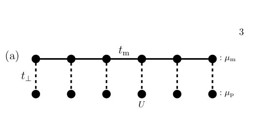
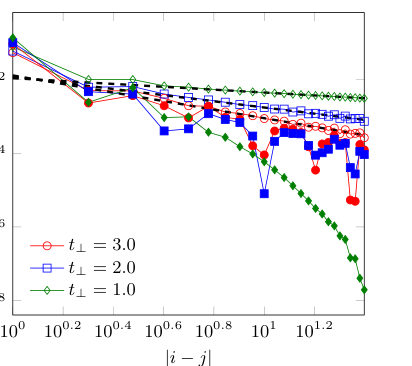
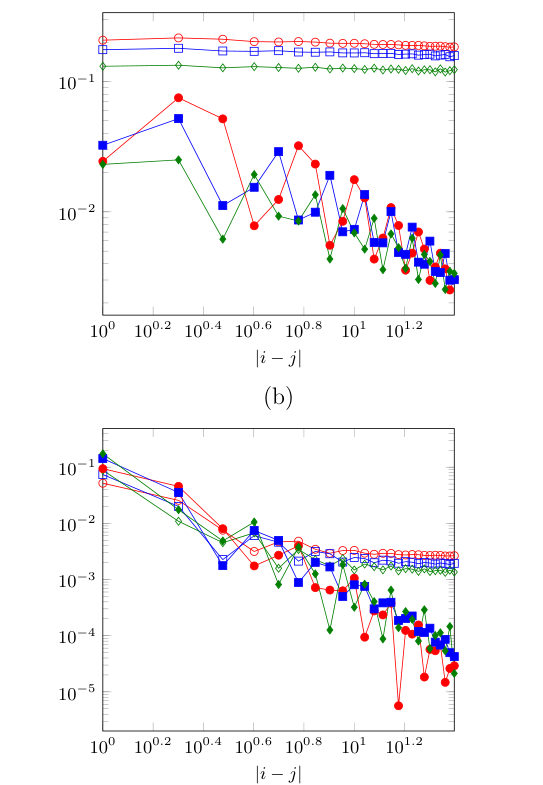
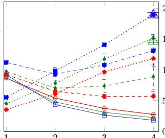
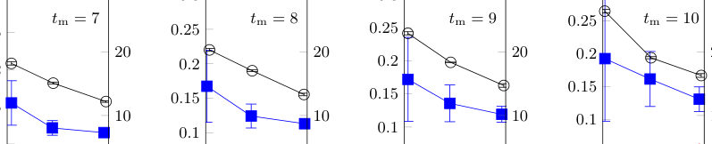
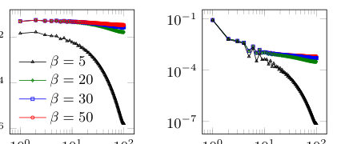
Summary. This paper demonstrates that doping a hybrid superconducting-metallic bilayer away from half-filling enhances superconducting correlations by breaking the competition with density-density correlations. It identifies distinct regimes of superconductivity controlled by the metal's parameters and provides a mapping to heavy-fermion systems. This work offers a new way to study Kivelson's bilayer proposal using magnetic materials.
Why it may be interesting. The paper provides a theoretical bridge between superconductivity enhancement and magnetic ordering in Kondo/Anderson lattices, offering a way to use spin-polarized heavy-fermion materials as simulators for superconducting bilayer physics.
Main problem. The study investigates how a metallic reservoir can enhance superconducting correlations in a hybrid bilayer system when doped away from half-filling, specifically addressing whether the charge gap present at half-filling suppresses superconductivity.
Main result. Doping the system away from half-filling breaks the degeneracy between superconducting and density-density correlations in favor of superconductivity, allowing for near-long-range order and revealing both stiffness-limited and amplitude-limited regimes.
Method. The authors utilize large-scale numerical simulations, including Density Matrix Renimormalization Group (DMRG) and Auxiliary Field Quantum Monte Carlo (AFQMC), alongside analytical frameworks like Conformal Field Theory.
Model / system. A 1D hybrid bilayer model consisting of a pairing subsystem (P-subsystem) with on-site pairing and a metallic subsystem (M-subsystem) coupled via inter-layer tunneling, which can be mapped to the periodic Anderson or Kondo lattice models.
Key observables. S-wave pair-pair correlations, density-density correlations, single-particle correlations, Luttinger liquid parameters (Kp and Km), and superconducting susceptibility.
Important parameters / regimes. Interaction strength (U), inter-layer tunneling (t_perp), metallic kinetic energy (t_m), filling fraction (n), and density imbalance between layers.
Assumptions / limitations. The study focuses on 1D chains; the extension of these findings to 2D and 3D systems remains a theoretical prediction.
Figures summary. Figure 1 illustrates the physical setup of the two weakly coupled chains (P-subsystem and M-subsystem) used in the model.
Paper structure. The paper introduces the Kivelson bilayer proposal, defines the 1D hybrid model and its mapping to magnetic lattices, presents numerical results for different doping and coupling regimes, discusses the transition between amplitude and stiffness-limited superconductivity, and concludes with implications for heavy-fermion materials.
Boosting superconductivity by metallic reservoirs is the essence of Kivelson's bilayer proposal. One layer provides pairing to the electrons, while the weakly coupled metal provides additional phase coherence to those pairs by mediating extended-range pair-pair coupling. Demonstrating significant and unambiguous performance gains with strong-coupling methods for such set-ups had been difficult. In the present work, we study these systems doped away from half-filling, corresponding to a partially spin-polarized 1D Anderson- or Kondo-lattice. We show that this breaks the coexistence of dominant superconducting and density-density correlations decisively in favour or the former. Consequently, we provide evidence that in this doped regime, superconducting near-long-range order is not precluded by a small charge-gap in the thermodynamic limit, as we have recently shown to be the case at half-filling [JE Ebot $et$ $al.$, arXiv:2602.11153 [cond-mat.supr-con]]. We study the complex manner in which the enhancement of superconductivity in the pairing layer depends on the parameters of the metal, and especially that both pairing-limited and stiffness-limited regimes may appear in these systems. In addition to superconducting bilayers, our results are relevant, via a particle-hole transformation, for heavy-fermion Kondo-lattice materials in magnetic fields, as we provide previously lacking insight on the competition between antiferromagnetic and easy-plane magnetism, as well as a route for comprehensive indirect tests of Kivelson's bilayer proposal well beyond previous capabilities.
Authors: Israel Michael Sigal
Type: theory · Category: quantum information and computing · PDF: https://arxiv.org/pdf/2604.27170v1
Analysis basis: full PDF text, analyzed in chunks
Topic relevance: 🔥 entanglement & information structure 4/5 · non-equilibrium dynamics 3/5
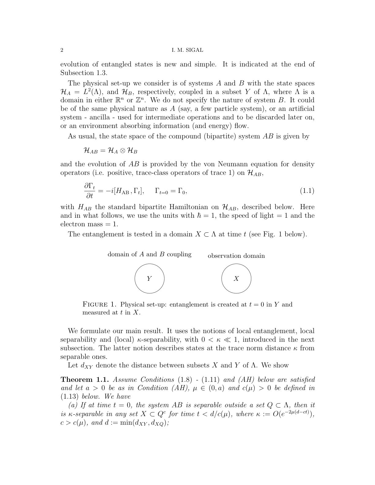
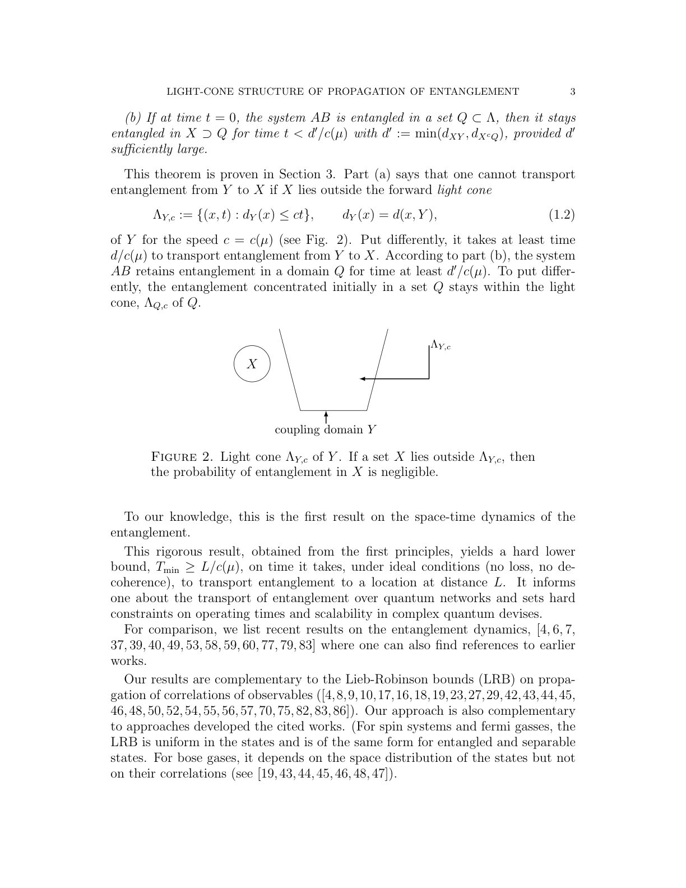
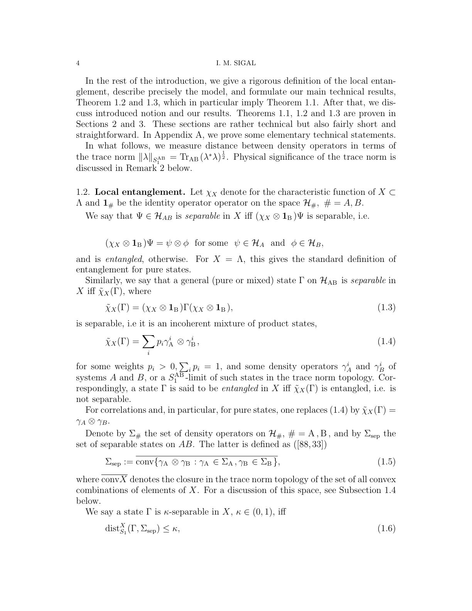
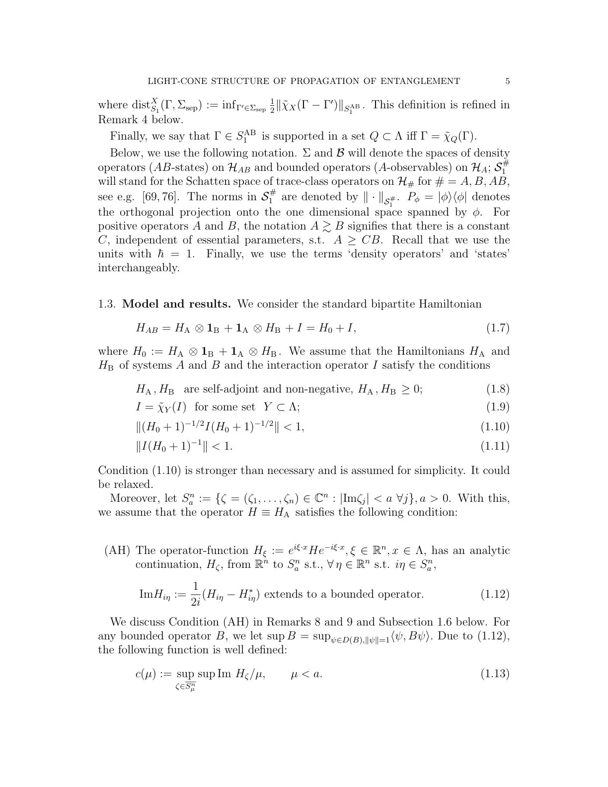
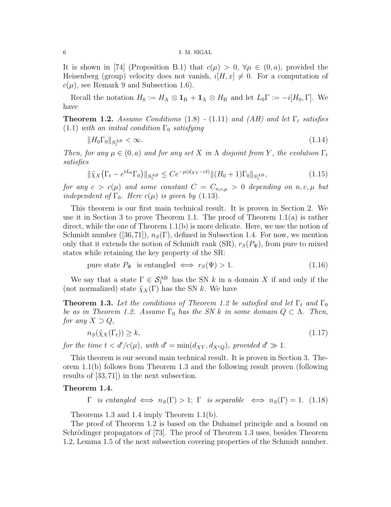
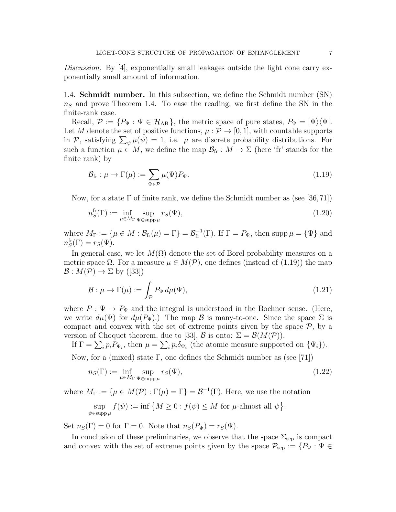
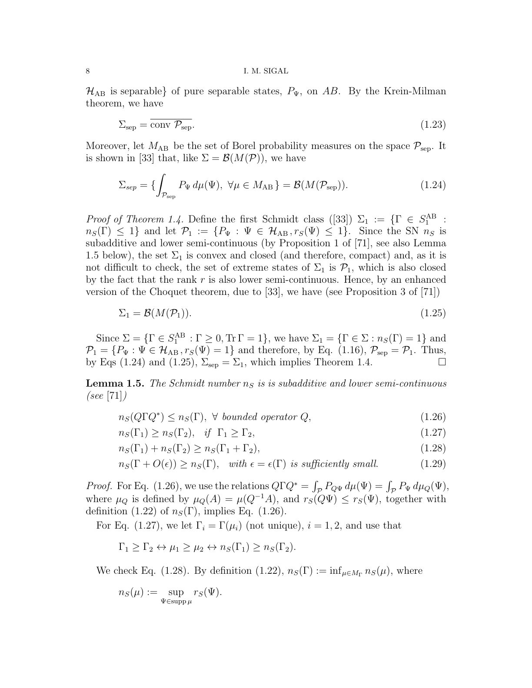
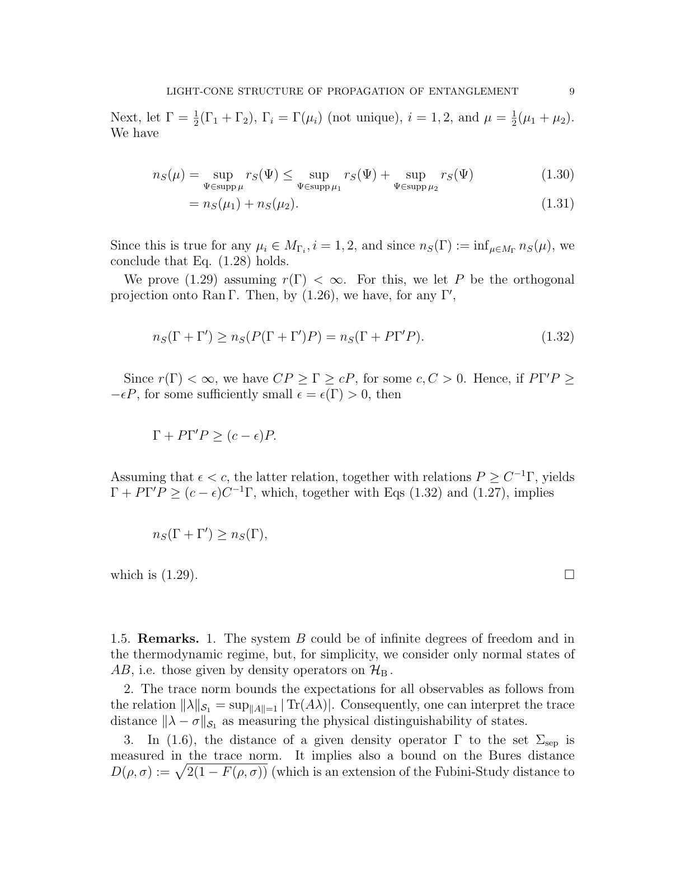
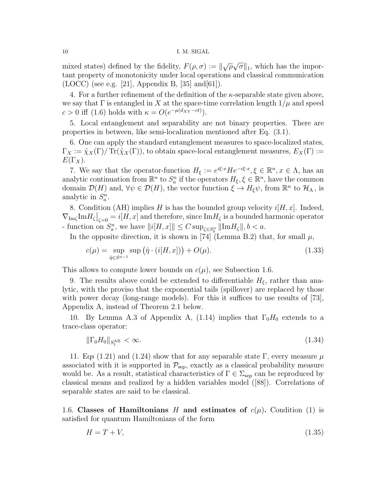
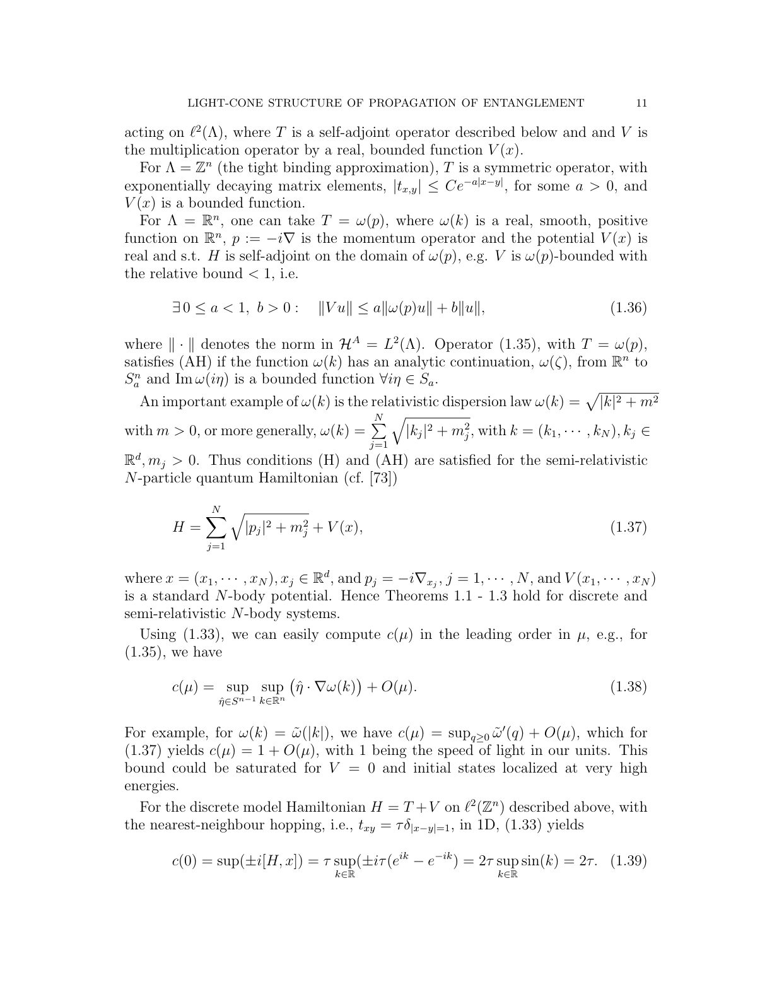
Summary. This paper establishes a rigorous 'light-cone' for entanglement propagation in quantum many-body systems. It proves that entanglement cannot be transported between distant regions faster than a specific velocity, providing a fundamental lower bound on communication time in quantum networks.
Why it may be interesting. It provides rigorous, fundamental limits on the speed of entanglement distribution, which is critical for designing quantum networks and understanding the dynamics of information in many-body systems.
Main problem. Establishing the existence of an effective light-cone for the propagation of entanglement in bipartite systems and determining the hard lower bounds on the time required to transport or maintain entanglement.
Main result. The paper proves that entanglement (quantified by the Schmidt number) propagates within a defined light-cone, providing an exponential bound on the leakage of entanglement outside this cone and a minimum time threshold for entanglement transport.
Method. The author uses a new analysis of space-time evolution involving Duhamel's principle, trace-norm estimates in Schatten spaces, and analytic continuation of the Hamiltonian's dispersion law.
Model / system. Bipartite systems (AB) with localized interactions, including discrete tight-binding models on lattices and continuous semi-relativistic N-body systems.
Key observables. Schmidt number (n_S), local entanglement, and trace norm distance to separability.
Important parameters / regimes. Propagation velocity (c), distance between domains (d_XY), and the error/distance from separability (kappa).
Assumptions / limitations. The Hamiltonian must satisfy specific analyticity conditions (AH) for the dispersion law, and interactions must be localized.
Paper structure. The paper introduces the problem of entanglement propagation, defines the mathematical framework for local entanglement and Schmidt numbers, presents theorems establishing the light-cone structure and error bounds, and concludes with technical lemmas on operator theory.
For a wide class of bipartite systems with localized couplings, we establish existence of an effective light-cone for propagation of entanglement. This result yields a hard lower bound on the time it takes, under ideal conditions (no loss, no decoherence), to transport entanglement to a distant location (say, a node of a graph-structured quantum network), or to maintain it there.
Authors: Pratim K. Saha
Type: both · Category: quantum information and computing · PDF: https://arxiv.org/pdf/2604.27718v1
Analysis basis: full PDF text, analyzed in chunks
Topic relevance: 🔥 quantum optics experiment 4/5 · QC/QI experiment 3/5
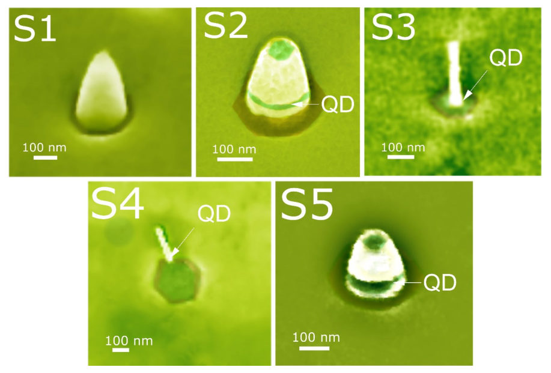
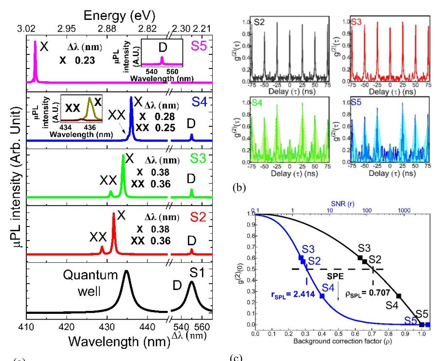
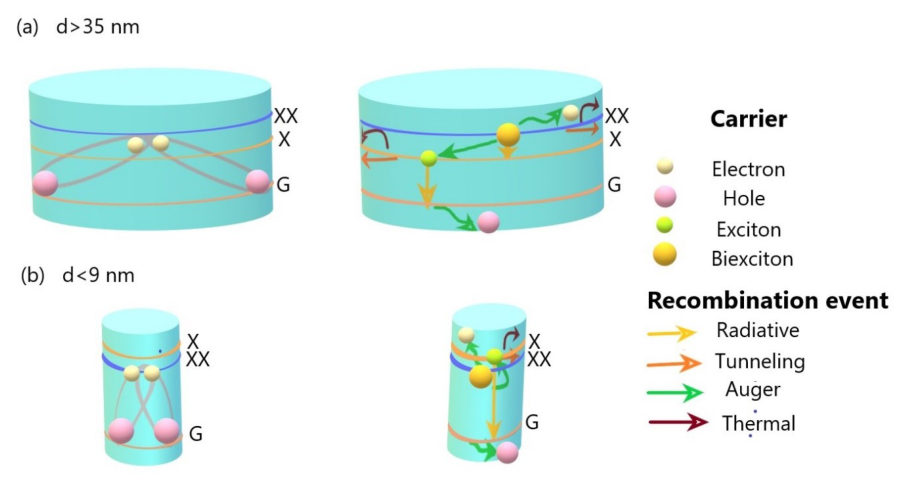
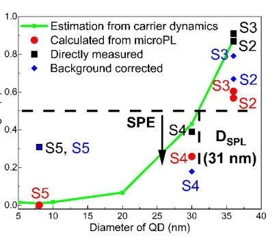
Summary. This work demonstrates how to achieve high-purity single-photon emission from InGaN quantum dots at room temperature by controlling their diameter. By reducing the QD size, the researchers suppressed surface-related noise and leveraged Auger recombination to favor single-photon purity. This establishes a design pathway for robust semiconductor-based quantum light sources.
Why it may be interesting. The paper provides a generalized physical framework for controlling photon statistics (g2(0)) via geometric engineering and carrier dynamics, which is fundamental for developing scalable, high-purity single-photon sources for quantum networks.
Main problem. Achieving high-purity, room-temperature single-photon emission (SPE) from semiconductor quantum dots by identifying the limiting effects of QD size and surface properties.
Main result. Demonstrated that reducing InGaN QD diameter below 31 nm suppresses surface recombination and utilizes Auger-driven decay to enable high-purity SPE at room temperature.
Method. The study combines experimental fabrication (dry and wet etching) and characterization (micro-PL, HBT autocorrelation) with theoretical modeling (COMSOL/Silvaco simulations and DOS-corrected Auger recombination models).
Model / system. Site-controlled In0.14Ga0.86N quantum dots embedded in vertical GaN nanowires, with diameters ranging from 8 nm to 36 nm, analyzed via a carrier decay model involving radiative, Auger, and surface recombination channels.
Key observables. Second-order autocorrelation g2(0), signal-to-noise ratio (r), background correction factor (rho), and spectral linewidths.
Important parameters / regimes. QD diameter (8-36 nm), exciton Bohr radius (~3 nm), and the single-photon limited diameter (31 nm).
Assumptions / limitations. The Auger recombination rate requires a density-of-states correction to remain physically realistic in the low-dimensional regime.
Figures summary. Schematics of the heterostructure, SEM images of etched samples, and micro-PL spectra showing exciton and biexciton peaks with varying linewidths.
Paper structure. The paper introduces the problem of room-temperature SPE, describes the fabrication and characterization of etched InGaN QDs, presents a theoretical framework for carrier dynamics and size-dependent decay, validates the model against experimental autocorrelation data, and concludes with implications for next-generation QD design.
Room-temperature single-photon emission (SPE) resulting from a biexciton-exciton cascaded decay is demonstrated for the first time from chemically and photoelectrochemically etched site-controlled In0.14Ga0.86N quantum dots (QDs) embedded in vertical GaN nanowires. Diameter-dependent biexciton-exciton dynamics are analysed to determine the eligibility of QD as a single-photon emitter. The signal-to-noise ratio degrades with increasing QD diameter. Background noise photons pose a bottleneck to achieving SPE. This is also explained from a carrier dynamics perspective. Surface recombination contributes to inhomogeneous broadening at QD diameters larger than 35 nm. Below 35 nm, density-of-states-corrected Auger gradually becomes the principal biexciton-decay route with further reduction in QD diameter, thereby quenching the possibility of thermal broadening and setting a threshold for SPE. Below 9 nm, the Auger recombination rate becomes manyfold of other decay rates, causing multi-photon suppression via single Auger decay to form an exciton. Surface recombination probability of this exciton is minimized while biexciton state filling probability is maximized by reducing sidewall surface states through wet-treatment. These improve biexciton state preparation and enhance the single-photon purity of the exciton towards the exciton Bohr radius (3 nm) regime. Far away from this regime, higher-order autocorrelations to characterize quantum emission involving multi-photon events are discussed. This study establishes a generalized physical framework for predetermining SPE probability as a function of QD surface and geometry down to the exciton Bohr radius regime, with practical implementations. This work shows the pathway to design and develop next-generation semiconductor QDs for high-purity room-temperature SPE.
Authors: Mason Edwards, Prabhat Mishra
Type: both · Category: quantum information and computing · PDF: https://arxiv.org/pdf/2604.28037v1
Analysis basis: abstract only; PDF text extraction failed or PDF unavailable
Topic relevance: 🔥 QC/QI experiment 4/5 · quantum measurements 2/5
Summary. This paper introduces a new method to characterize errors in quantum feed-forward operations by looking at individual measurement branches rather than just averages. It demonstrates that how we mitigate readout errors can fundamentally change the perceived quality of quantum operations depending on the hardware's error profile. This provides a more granular tool for debugging and optimizing dynamic quantum circuits.
Why it may be interesting. not directly relevant
Main problem. The error associated with measurement-conditioned corrective operations (feed-forward) in dynamic-circuit teleportation is poorly understood when evaluated on a branch-by-branch basis.
Main result. The authors developed a framework using classical Choi shadows to characterize branch-specific feed-forward errors, revealing that the effectiveness of mitigation strategies (post-processing vs. PROM) depends heavily on the underlying readout error of the physical qubit layout.
Method. The study compares three correction approaches (physical, post-processing, and PROM-mitigated) and uses an entangled reference qubit to experimentally reconstruct branch Choi operators, validating them against full tomography.
Model / system. The experimental platform consists of superconducting quantum processors with different physical qubit layouts characterized by varying levels of mid-circuit measurement readout error.
Key observables. Branch Choi operators, branch qualities, and operational feed-forward penalty.
Important parameters / regimes. Measurement readout error levels and the feed-forward penalty (measured at approximately 0.02-0.03 and 0.07 in different layouts).
Paper structure. The paper introduces a framework for branch-resolved error characterization, analyzes three different correction methodologies, presents experimental reconstruction of Choi operators, and compares results across two distinct physical qubit layouts to demonstrate the reversal of mitigation effectiveness.
Mid-circuit measurement and classical feed-forward are essential primitives for dynamic-circuit teleportation on superconducting quantum processors. However, the error associated with measurement-conditioned corrective operations remains poorly understood when evaluated with respect to individual measurement branches. In this paper, we present a framework for characterizing feed-forward error in dynamic circuit teleportation without losing valuable information related to its behavior across separate branches. We analyze three approaches to applying measurement-conditioned corrections: (i) physical application, (ii) post-processing adjustments, and (iii) a mitigated physical application which utilizes Bit-Flip Averaging (BFA)-based Probabilistic Readout Error Mitigation (PROM). We experimentally reconstruct branch Choi operators via an entangled reference qubit, and validate our physical-application and post-processing Choi-shadow estimators against full tomography of the branch Choi operators. We perform experiments on two physical qubit layouts which differ greatly in mid-circuit measurement readout error, and observe a reversal in the relative order in branch qualities obtained from the post-processing and PROM mitigation strategies. In one physical layout with higher measurement readout error, the operational feed-forward penalty is relatively modest (approximately 0.02-0.03) and PROM produces higher branch qualities than post-processing for every branch. In a separate layout with lower readout error, the operational feed-forward penalty increases to roughly 0.07, and post-processing exceeds PROM for all branch qualities. Our characterization framework can reveal branch-specific error structure and mitigation behavior that state-of-the-art outcome-averaged analyses fail to expose.
Authors: Jaden Hawley, Chi-Ren Shyu
Type: both · Category: quantum information and computing · PDF: https://arxiv.org/pdf/2604.27183v1
Analysis basis: full PDF text, analyzed in chunks
Topic relevance: 🔥 QC/QI experiment 4/5 · correlated / nonlocal dissipation 2/5
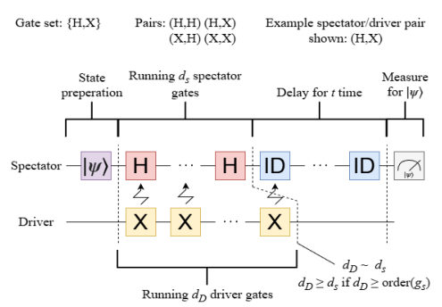
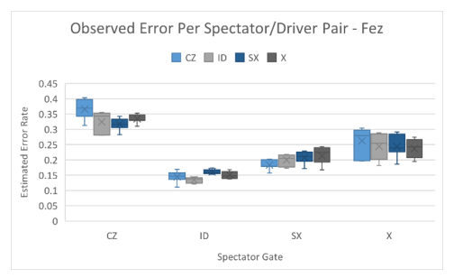
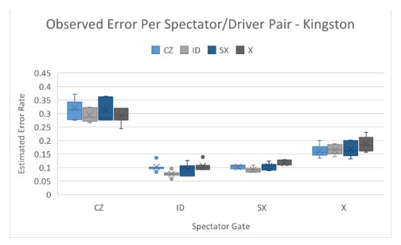
Summary. The authors present CrossBench, a scalable tool for generating customized crosstalk benchmarks on large quantum computers. By using a graph-based approach to assign driver and spectator qubits, the system efficiently identifies which gates introduce significant errors to neighboring qubits. This provides an accessible way to obtain essential hardware metrics for error mitigation and circuit optimization.
Why it may be interesting. The paper addresses the characterization of open quantum system dynamics (crosstalk) in large-scale architectures, which is critical for understanding noise propagation and error mitigation in many-body quantum processors.
Main problem. Characterizing and benchmarking crosstalk in large-scale NISQ devices is becoming prohibitively resource-intensive and expensive as device complexity and size increase.
Main result. The CrossBench system successfully and scalably identifies significant gate-dependent crosstalk across multiple IBM quantum processors (Heron and Nighthawk classes) with statistical significance.
Method. A customizable, graph-based benchmark generator uses a custom labeling algorithm to assign driver and spectator qubits to detect error rate changes induced by neighboring gates.
Model / system. The study focuses on NISQ-era superconducting quantum processors, specifically IBM's Heron-class (Fez, Kingston) and Nighthawk-class (Miami) architectures.
Key observables. Change in error rate of spectator qubits when subjected to driver gate operations; error probability per gate pair.
Important parameters / regimes. Driver depth (d_D), gate error threshold (delta), native gate sets (X, SX, CZ, ID), and device topology (graph edges/vertices).
Assumptions / limitations. Assumes that the primary variable causing error rate fluctuations is the driver gate's crosstalk and that ID gates introduce negligible additional error.
Figures summary. Circuit diagrams of the driver/spectator setup and box-and-whisker plots showing error rate distributions across different IBM processors.
Paper structure. Introduction to the crosstalk scalability problem, description of the CrossBench algorithm and graph-labeling method, experimental implementation on IBM hardware, results analysis with statistical significance, and discussion of limitations and future work.
As quantum computers continue to increase in size and topological complexity, benchmarking crosstalk becomes more complex and resource-intensive. This limits the ability to obtain relevant crosstalk metrics for applications such as error mitigation, quantum computer security, and circuit transpilation. There applications benefit from accessible metrics on how each gate contributes to crosstalk. However, crosstalk metrics are rarely provided by quantum computer providers and can be expensive to obtain on modern large NISQ devices. In this work, we propose CrossBench, a customizable system that generates crosstalk benchmarks for finitely large NISQ devices with arbitrary topologies. CrossBench uses a custom graph labeling algorithm to generate crosstalk benchmarks for a given quantum topology and gate set. These benchmarks can be used to estimate the average contribution of each gate's crosstalk to qubit error rates. We evaluate the effectiveness of CrossBench by generating and running benchmarks on multiple IBM quantum computers with different topologies. Our results show that CrossBench can identify gates that introduce significant crosstalk across all tested devices, with strong statistical significance (p < 0.05). These promising results show that CrossBench can give simple and accessible crosstalk benchmarks for modern NISQ systems.
Authors: Zi-Xu Lu, Gang Liu, Matteo Fadel, Jie Li
Type: theory · Category: quantum information and computing · PDF: https://arxiv.org/pdf/2604.27565v1
Analysis basis: full PDF text, analyzed in chunks
Topic relevance: 🔥 spintronics-quantum-optics interface 4/5 · quantum measurements 2/5
Summary. This paper proposes a method to create GKP error-correcting states using magnons in a hybrid system with a superconducting qubit. By leveraging the natural squeezing from a magnetic crystal's shape, the authors show how to prepare multi-component bosonic states and perform logical gates. This establishes magnonics as a viable new platform for bosonic quantum information processing.
Why it may be interesting. It extends continuous-variable quantum error correction (GKP codes) from traditional optical and superconducting platforms to the field of magnonics, offering a new hybrid platform for fault-tolerant quantum computing and sensing.
Main problem. Developing a protocol for the preparation and manipulation of Gottesman-Kitaev-Preskill (GKP) states within a magnonic platform for bosonic quantum error correction.
Main result. The authors demonstrate a protocol to generate three- and four-component magnonic GKP-like states and implement logical Pauli, Hadamard, and phase gates with an average fidelity of approximately 87.3%.
Method. The protocol uses a sequence of conditional-displacement interactions and qubit projective measurements, utilizing the geometric anisotropy of a magnetic crystal to provide intrinsic squeezing.
Model / system. A hybrid magnon-qubit system consisting of an ellipsoidal magnetic crystal coupled to a superconducting transmon qubit via a microwave cavity, modeled using a quantized Kittel mode and an effective conditional-displacement Hamiltonian.
Key observables. Wigner functions, stabilizer expectation values (SX, SZ), effective squeezing (dB), and logical qubit density matrix fidelity.
Important parameters / regimes. Large-detuning regime, effective coupling chi/2pi = 7.55 MHz, squeezing parameter r approx 1, and temperature T = 10 mK.
Assumptions / limitations. Large-detuning limit for adiabatic elimination of the cavity, Rotating Wave Approximation (RWA), and neglecting small additional squeezing from counter-rotating terms.
Figures summary. Figure 1 shows the phase-space structure of stabilizers and the experimental setup; Figure 2/3 illustrates the Wigner functions and characterization of the generated multi-component states.
Paper structure. The paper introduces the GKP encoding, defines the hybrid magnon-qubit physical model and Hamiltonian, derives the effective conditional-displacement interaction, presents the state preparation protocol and gate implementation, and concludes with numerical results including dissipation and fidelity analysis.
Bosonic quantum error correction encodes a logical qubit in an oscillator, avoiding the hardware overhead of large qubit arrays. Among such encodings, Gottesman-Kitaev-Preskill (GKP) states are paticularly powerful because their phase-space grid structure protects against small displacement errors simultaneously in both conjugate quadratures. Here we provide the first protocol for preparing magnonic GKP states, which involves an ellipsoidal magnetic crystal effectively coupled to a superconducting qubit via a microwave cavity. The geometric anisotropy intrinsically squeezes the magnon mode, while the cavity-mediated qubit control realizes an effective conditional-displacement interaction. We show that two rounds of a conditional-displacement interaction and a qubit projective measurement yield three- and four-component magnonic GKP-like states. We also show how to realize single logical qubit gate operations, such as Pauli, Hadamard and phase gates, completing the logical Pauli basis of the approximate GKP code. Our results establish hybrid magnon-qubit systems as a promising platform for preparing bosonic code states, with applications in magnonic fault-tolerant quantum computation and quantum sensing.
Authors: Marcos V. S. Lima, Carlos H. S. Vieira, Irismar G. da Paz, Pedro R. Dieguez, Lucas S. Marinho
Type: theory · Category: quantum information and computing · PDF: https://arxiv.org/pdf/2604.28137v1
Analysis basis: abstract only; PDF text extraction failed or PDF unavailable
Topic relevance: 🔥 quantum measurements 4/5 · methods for driven-dissipative 2/5
Summary. This paper presents a theoretical framework to study the transition from weak to strong quantum measurements in the presence of thermal noise and decoherence. It shows that temperature-dependent fluctuations and thermal instabilities significantly alter measurement statistics and the emergence of projective behavior. This is important for understanding how environmental effects impact quantum measurement protocols.
Why it may be interesting. It provides a critical analysis of how realistic thermal environments and decoherence impact the fundamental transition between weak and strong measurement regimes, which is essential for understanding measurement-based protocols in noisy quantum systems.
Main problem. The paper investigates how environmental decoherence, thermal noise, and thermal instabilities affect the continuous transition from weak to strong quantum measurements.
Main result. The authors demonstrate that measurement statistics are non-trivially modified by the temperature of thermal instabilities, the probe's thermal properties, and the specific pre- and post-selection settings, which reshapes the weak-value condition.
Method. The authors develop a general framework using a thermal Gaussian state model for the probe and incorporate open-system evolution for the measured system.
Model / system. The model consists of a system undergoing open-system evolution prior to post-selection, interacting with a probe modeled as a thermal Gaussian state.
Key observables. Measurement statistics and the weak-value condition.
Important parameters / regimes. Temperature regime of thermal instabilities, probe thermal properties, and pre- and post-selection choices.
Assumptions / limitations. The probe is assumed to be a thermal Gaussian state.
Paper structure. The paper introduces the problem of measurement transitions under noise, develops a general framework for thermal Gaussian probes and open-system dynamics, and analyzes the resulting modifications to measurement statistics and weak values.
Quantum measurement is physically realized through a finite dynamical interaction between a system and a measuring apparatus, giving rise to a continuous transition from weak to strong regimes. While this crossover is well understood under ideal conditions, the combined role of thermal instabilities and pre- and post-selection open dynamics has not been systematically addressed. Here, we develop a general framework to analyze the weak-to-strong measurement transition in the simultaneous presence of environmental decoherence and thermal noise. We model the probe as a thermal Gaussian state, explicitly incorporating temperature-dependent fluctuations in the measuring device, and include open-system evolution of the measured system prior to post-selection. By deriving the apparatus's final state, we show that the measurement statistics are modified in a nontrivial, highly sensitive manner by the temperature regime of the system's thermal instabilities, the probe's thermal properties, and the particular choice of pre- and post-selection. This approach allows us to characterize how thermal effects reshape the weak-value condition and influence the emergence of projective behavior across the full measurement crossover.
Authors: Aaron Lax
Type: theory · Category: quantum information and computing · PDF: https://arxiv.org/pdf/2604.27339v1
Analysis basis: full PDF text, analyzed in chunks
Topic relevance: 🔥 quantum measurements 4/5 · entanglement & information structure 1/5
Summary. This paper proves that the Born rule is the unique way to map pure states to measurement probabilities for a fixed basis, provided the map respects certain geometric bounds and correctly identifies basis states. It uses a rigidity theorem for 1-Lipschitz maps to show that the requirement of not expanding Fisher information effectively 'freezes' the map to the standard Born rule.
Why it may be interesting. This work provides a fundamental, metric-based justification for the Born rule, which is central to the interpretation of quantum mechanics and the operational understanding of quantum measurements in quantum information.
Main problem. Determining whether the Born rule is the unique readout map for a fixed rank-1 projective measurement (PVM) under specific geometric and operational constraints.
Main result. The paper proves that the conjunction of square-root regularity, the universal readout Cramér-Rao bound, and operational calibration on basis preparations uniquely forces the readout map to be the Born rule.
Method. A geometric rigidity approach using the Fisher-Rao metric on the probability simplex and the Fubini-Study metric on pure states, specifically employing a square-root chart to transform the problem into a 1-Lipschitz self-map problem on a spherical orthant.
Model / system. A finite-dimensional Hilbert space (dimension d >= 2) and the associated projective pure-state space (CP^{d-1}) with a fixed rank-1 PVM.
Key observables. Classical Fisher information, Quantum Fisher information, and the readout probabilities of the PVM.
Important parameters / regimes. The dimension d of the Hilbert space (result is dimension-wise).
Assumptions / limitations. The result is restricted to fixed dimensions, pure states, and a single fixed rank-1 PVM; it assumes square-root regularity, the Cramér-Rao bound (Fisher non-expansion), and vertex calibration.
Paper structure. The paper develops a vertex rigidity lemma, establishes a theorem for Fisher-non-expanding maps on the probability simplex, and concludes with the primary theorem for PVM readout rigidity, followed by corollaries regarding escort-class Born uniqueness.
Fix a finite dimension $d \geq 2$ and a fixed rank-1 PVM $M=\{|e_1\rangle\langle e_1|,\ldots,|e_d\rangle\langle e_d|\}$ on ${\bf C}^d$. Let $P_M:\mathbb{CP}^{d-1}\toΔ^{d-1}$ be a readout map on pure states. We prove that three primitives force the Born rule for this fixed measurement: (i) square-root regularity of $R_M=\sqrt{P_M}$ along Fubini-Study geodesics, (ii) the universal readout Cramer-Rao bound $F_{\rm cl}\leq F_Q$ on smooth pure-state curves, and (iii) operational calibration on basis preparations $P_M([e_i])=δ_i$. The geometric core is a rigidity theorem for Fisher-non-expanding self-maps of the probability simplex: after conjugation by the square-root chart, such maps become round-metric 1-Lipschitz self-maps of the positive spherical orthant, and vertex fixing forces the identity. The main readout theorem is dimensionwise, fixed-PVM, and pure-state only. Escort-class Born uniqueness and the Markov/coarse-graining routes appear as corollaries or alternative routes.
Authors: Samuel Spell, Chi-Ren Shyu
Type: both · Category: quantum information and computing · PDF: https://arxiv.org/pdf/2604.27153v1
Analysis basis: full PDF text, analyzed in chunks
Topic relevance: 🔥 QC/QI experiment 4/5
Summary. This paper introduces the first quantum-enhanced pipeline for Subgroup Discovery in network security, using QAOA to find interpretable attack patterns. It demonstrates that quantum optimization can recover complex feature interactions missed by classical greedy algorithms, while characterizing the performance degradation limits of current NISQ hardware.
Why it may be interesting. not directly relevant
Main problem. The challenge of identifying interpretable, multi-feature interaction patterns (subgroups) in network security datasets, which is an NP-hard combinatorial optimization problem that classical greedy heuristics often fail to solve.
Main result. The QAOA pipeline successfully identifies high-precision attack subgroups that classical Beam Search prunes, while also establishing a quantitative NISQ scaling boundary where hardware noise causes performance to collapse between 20 and 30 qubits.
Method. A hybrid quantum-classical pipeline using QAOA on IBM Quantum hardware, where the Subgroup Discovery problem is formulated as a QUBO and solved via a least-squares regression fit to the WRAcc landscape.
Model / system. The problem is modeled as a Quadratic Unconstrained Binary Optimization (QUBO) problem mapped to an Ising Hamiltonian with ZZ couplings, implemented on the ibm_pancakes superconducting processor.
Key observables. WRAcc (Weighted Relative Accuracy), Hamiltonian quality (r5), and solution quality ratio (r6).
Important parameters / regimes. QAOA circuit depth (p), qubit count (10-30), target cardinality (K), and penalty weight (lambda).
Assumptions / limitations. The WRAcc landscape can be accurately approximated by a quadratic surrogate; high-cardinality features can be reduced via information-gain filtering to fit within NISQ qubit budgets.
Figures summary. Figure 1 shows the end-to-end QAOA pipeline; Figure 3 shows the high R-squared value of the QUBO landscape fit; Figure 4 presents a Bubble Pareto front comparing QAOA to classical methods; Figure 5 compares subgroup richness between QAOA and Beam Search.
Paper structure. The paper follows a logic of problem formulation (SD as QUBO), data preprocessing (binarization and feature selection), algorithmic implementation (QAOA on IBM hardware), benchmarking against classical heuristics, and a scaling analysis of hardware noise limits.
While current network intrusion detection systems achieve satisfactory accuracy, they often lack explainability. Subgroup Discovery (SD) addresses this by building interpretable rules that characterize feature interactions associated with attack traffic. With large datasets, classical heuristic beam search methods struggle with exponentially scaling search spaces and can prune critical multi-feature interactions. This paper introduces a quantum-enhanced pipeline for SD applied to network intrusion detection using NSL-KDD, formulating SD as quantum optimization for the first time. By encoding feature selection as a Quadratic Unconstrained Binary Optimization (QUBO) and solving it via the Quantum Approximate Optimization Algorithm (QAOA) on IBM Quantum hardware (ibm_pittsburgh), the pipeline identifies subgroups of network features that discriminate normal from attack traffic. A least-squares regression QUBO formulation fits the Weighted Relative Accuracy (WRAcc) landscape over feature subsets, with surrogate sampling for larger QUBOs. Results are benchmarked against exhaustive enumeration and Beam Search using ratios for Hamiltonian quality and WRAcc. Hardware scaling experiments on ibm_pittsburgh (10-30 qubits) reveal that QAOA at depth p = 1 shows WRAcc ratios of 0.983 at 10 qubits, 0.971 at 15 qubits, 0.855 at 20 qubits, and 0.624 at 25 qubits, degrading to 0.039 at 30 qubits as circuit noise dominates, establishing an empirical NISQ scaling boundary. Results demonstrate that QAOA discovers subgroups competitive with classical heuristics and finds multi-feature interaction patterns that greedy Beam Search prunes, with QAOA-unique subgroups achieving up to 99.6% test precision. This work establishes a framework for quantum combinatorial optimization in cybersecurity and characterizes hardware scaling for NISQ devices.
Authors: Tarush Tiwari, Sudhir K. Sahu, Guilhem Ribeill, Michael Senatore, Matthew D. LaHaye, Raymond W. Simmonds, Daniel L. Campbell, Archana Kamal, Leonardo Ranzani
Type: experiment · Category: quantum information and computing · PDF: https://arxiv.org/pdf/2604.27080v1
Analysis basis: abstract only; PDF text extraction failed or PDF unavailable
Topic relevance: 🔥 QC/QI experiment 4/5
Summary. This paper demonstrates a high-fidelity 99.827% iSWAP gate between two transmon qubits using a double transmon coupler. By using parametric driving, the researchers achieved a fast 40ns gate while effectively suppressing unwanted static interactions and crosstalk. This approach provides a scalable and resource-efficient method for implementing two-qubit operations in superconducting processors.
Why it may be interesting. The use of parametric gates to achieve frequency-selective activation and the suppression of crosstalk is highly relevant to the control of open quantum systems and the development of scalable quantum architectures.
Main problem. Achieving high-fidelity entangling gates between superconducting qubits while suppressing parasitic crosstalk and static interactions.
Main result. Demonstration of a parametric iSWAP gate with 99.827% fidelity in 40ns using a double transmon coupler.
Method. The researchers used a parametric driving scheme on a double transmon coupler (DTC) and employed robust phase estimation to calibrate non-commuting error terms.
Model / system. A superconducting circuit architecture consisting of two transmon qubits coupled via a recently developed double transmon coupler (DTC).
Key observables. Gate fidelity and gate duration.
Important parameters / regimes. 99.827% gate fidelity, 40ns gate duration.
Paper structure. The paper introduces the problem of parasitic crosstalk, describes the DTC architecture, details the parametric iSWAP implementation and calibration via robust phase estimation, and presents the achieved fidelity results.
Entangling operations are at the heart of all approaches to quantum information processing. Parametric gates, in particular, offer a versatile solution to strongly couple off-resonant superconducting qubits with suppressed parasitic crosstalk to spectator qubits due to frequency-selective activation. In this work, we demonstrate a parametric iSWAP gate between two transmon qubits using the recently developed double transmon coupler (DTC). The DTC supports robust internally-defined cancellation point (``off'' state) for static interactions, while simultaneously mediating a fast parametric coupling between data qubits that can be deployed for high-fidelity two-qubit operations. We use robust phase estimation to calibrate non-commuting error terms in the parametric iSWAP gate, and achieve a 99.827% gate fidelity in 40ns without any numerical optimization. The circuit architecture and calibration techniques developed here are extensible to other gate implementations and qubit modalities, paving the way towards resource-efficient quantum information processing.
Authors: Suman Karan, Swati Chaudhary, Harshwardhan Wanare, Anand Kumar Jha
Type: theory · Category: quantum information and computing · PDF: https://arxiv.org/pdf/2604.27739v1
Analysis basis: full PDF text, analyzed in chunks
Topic relevance: 🔥 interference shaping light 4/5
Summary. The paper introduces a 'wavefront twister' optical element that sorts OAM modes into concentric rings of different radii. By increasing the twisting strength, the researchers demonstrate that inter-mode crosstalk can be almost entirely eliminated, offering a scalable path for high-dimensional OAM-based applications.
Why it may be interesting. This is highly relevant to quantum optics and photonic quantum information, as it proposes a scalable method for managing high-dimensional OAM states, which are essential for high-capacity quantum communication and encoding.
Main problem. The challenge of efficiently and unambiguously sorting high-dimensional Orbital Angular Momentum (OAM) modes while minimizing inter-modal crosstalk and diffraction loss.
Main result. The proposed 'wavefront twister' maps OAM modes to distinct annular rings at the focal plane, where increasing the twisting strength can reduce crosstalk from 15.45% to 0.05%.
Method. The authors use the Fresnel-Kirchhoff diffraction integral and paraxial approximation to calculate electric field intensity, employing power series expansions and hypergeometric functions for analytical evaluation.
Model / system. An optical system consisting of a novel 'wavefront twister' element—which applies a radially dependent rotation theta(rho) = a*rho—followed by a convex lens, acting on Laguerre-Gaussian (LG) beams.
Key observables. OAM index (l), mean radial position (mu), radial spread (sigma), and inter-modal crosstalk percentage.
Important parameters / regimes. Twisting strength (a/w0), OAM topological charge (l), and beam waist (w0).
Assumptions / limitations. The study assumes the paraxial approximation for LG beams and focuses on the p=0 radial mode.
Figures summary. Fig 1 shows the conceptual design of the twister vs. a standard rotator; Fig 2 and 3 show 2D/1D intensity profiles at different twisting strengths; Fig 4 plots radial position and spread vs. l; Fig 5 shows crosstalk vs. twisting strength.
Paper structure. The paper introduces the wavefront twister concept, provides the mathematical framework for the coordinate transformation and diffraction, presents numerical simulations of mode separation and crosstalk, and discusses scalability and limitations.
We propose an OAM sorter based on a novel optical element that we refer to as a wavefront twister. It is a generalization of the conventional wavefront rotators such as the Dove prism. However, unlike a Dove prism, which simply rotates a wavefront, the rotation generated by a wavefront twister varies linearly with radial position, resulting in the twisting of the wavefront. We demonstrate that the wavefront twister, followed by a lens, maps each OAM mode to an annulus of distinct radius at the back focal plane of the lens with negligible inter-modal overlap and preserves the circular symmetry. Thus, the proposed wavefront twister offers a scalable scheme for high-dimensional OAM mode sorting, with important consequences for the practical realization of OAM-based applications.
Authors: Peilun Han, Zijian Liang, Yifei Wang, Bowen Yang, Yingfei Gu, Yu-An Chen
Type: theory · Category: quantum information and computing · PDF: https://arxiv.org/pdf/2604.27053v1
Analysis basis: abstract only; PDF text extraction failed or PDF unavailable
Topic relevance: 🔥 entanglement & information structure 4/5
Summary. This paper addresses the issue of inaccurate topological entanglement entropy measurements in stabilizer codes. By identifying the source of spurious errors, the authors propose a new calculation method that provides a clean measurement of the total quantum dimension. They further demonstrate the utility of this method by revealing topological frustration in specific code geometries.
Why it may be interesting. not directly relevant
Main problem. Topological entanglement entropy (TEE) can suffer from spurious contributions that lead to an overestimation of the total quantum dimension in 2D gapped phases.
Main result. The authors identify the microscopic origin of spurious TEE and introduce a new concave partition method that is rigorously proven to be free of these spurious contributions.
Method. The study utilizes the framework of translation-invariant stabilizer codes of prime-dimensional qudits and analyzes bivariate bicycle codes on a bipartite cylinder.
Model / system. The work focuses on translation-invariant stabilizer codes of prime-dimensional qudits and bivariate bicycle codes on a bipartite cylinder.
Key observables. Topological entanglement entropy (TEE) and entanglement entropy dependence on cylinder circumference.
Important parameters / regimes. Prime-dimensional qudits and cylinder circumference.
Assumptions / limitations. The proposed prescription is specifically proven for translation-invariant stabilizer codes of prime-dimensional qudits.
Paper structure. The paper identifies the origin of spurious TEE, introduces a new concave partition prescription, provides a rigorous proof of its accuracy, and applies the method to study bivariate bicycle codes on a cylinder.
Topological entanglement entropy (TEE) is a key diagnostic of long-range entanglement in two-dimensional gapped phases of matter, but it can suffer from spurious contributions that overestimate the total quantum dimension of the underlying topological order. In this work, we identify the microscopic origin of spurious TEE and introduce a concave partition for computing the Levin-Wen TEE of translation-invariant stabilizer codes of prime-dimensional qudits. We rigorously prove that this prescription is free of spurious contributions. As a complementary probe, we study bivariate bicycle codes on a bipartite cylinder and show that the entanglement entropy depends sensitively on the cylinder circumference, revealing topological frustration of the underlying anyons.
Authors: Tan Van Vu, Keiji Saito
Type: theory · Category: statistical mechanics · PDF: https://arxiv.org/pdf/2604.27858v1
Analysis basis: full PDF text, analyzed in chunks
Topic relevance: entanglement & information structure 3/5 · correlated / nonlocal dissipation 2/5 · methods for driven-dissipative 2/5 · non-equilibrium dynamics 2/5 · quantum measurements 2/5
Summary. This paper introduces a new way to measure the difficulty of performing physical operations like cooling or state erasure using geometric complexity. It proves that as you try to make these operations more precise, the required physical resources (like time, energy, or control) must become infinite. This result provides a universal, dynamics-independent version of the third law of thermodynamics for both classical and quantum systems.
Why it may be interesting. It provides a unified, geometric version of the third law of thermodynamics that applies to both classical stochastic processes and quantum open systems, linking thermodynamic costs to information-theoretic complexity.
Main problem. The authors seek a universal, dynamics-independent principle to quantify the difficulty of implementing state-reset maps, such as cooling or erasure, which currently lack a unified measure beyond specific protocols.
Main result. The paper establishes a fundamental complexity-error trade-off relation, e^{C} * epsilon >= 1, proving that achieving zero error in a reset operation requires diverging geometric complexity.
Method. The authors employ a Riemannian geometric framework, defining complexity as the minimal geodesic length on a manifold of physical maps using a tailored log-barrier Hessian metric.
Model / system. The framework applies to both classical stochastic maps (Markovian and non-Markovian processes) and quantum channels (CPTP maps, Lindbladian dynamics, and unitary-based protocols).
Key observables. Geometric complexity (C), execution error (epsilon), Shannon/von Neumann entropy, and the number of sequential protocols (N).
Important parameters / regimes. Dimension of the state space (d), transition rates (w), operation time (tau), and the metric parameter (alpha).
Assumptions / limitations. The derivation assumes smooth paths in the space of probability distributions and focuses on maps where the output distribution is strictly positive.
Figures summary. Figure 1(a) illustrates a state-agnostic reset map for cooling and erasure, while Figure 1(b) defines geometric complexity as the geodesic length between the identity and a target map.
Paper structure. The paper introduces the problem of state-resetting, develops a Riemannian geometric framework for complexity, proves the complexity-error trade-off, demonstrates universality across classical and quantum regimes, and provides analytical bounds and scaling relations.
The third law of thermodynamics forbids cooling a physical system to absolute zero in a finite number of operational steps. Although this unattainability principle has been quantified for specific state-to-state transitions, a universal, dynamics-independent bound for implementing a state-agnostic reset map remains elusive. In this work, we unveil the fundamental limits of physical map implementation by deriving a trade-off relation based on geometric complexity. By analyzing continuous paths of maps on a geometric manifold, we prove that the geometric complexity of any classical stochastic map or quantum channel is bounded from below by its execution error. As a consequence, we show that achieving zero error in a state-reset operation requires a divergent geometric complexity -- a unified measure that naturally incorporates disparate physical resources, including infinite time, energetic cost, or control bandwidth. This unattainability principle holds universally across both classical and quantum regimes, establishing a strict geometric limit on the physical realization of reset operations in thermodynamic control and quantum computation.
Authors: Lorenzo Lucarini, Sandro Meloni, Pablo Villegas
Type: theory · Category: statistical mechanics · PDF: https://arxiv.org/pdf/2604.28003v1
Analysis basis: abstract only; PDF text extraction failed or PDF unavailable
Topic relevance: non-equilibrium dynamics 3/5 · non-equilibrium universality 3/5 · driven-dissipative phase transition 2/5 · scars & prethermalization 2/5
Summary. The paper shows that synergistic interactions can create a new pathway to extended criticality and Griffiths-like slow dynamics. This mechanism works by using complementary pathways to reinforce activity, and it is robust across both higher-order and nonlinear pairwise networks.
Why it may be interesting. This is interesting for many-body dynamics as it identifies a novel mechanism for achieving slow, non-exponential relaxation and extended criticality without relying on traditional quenched disorder.
Main problem. Investigating whether extended criticality and Griffiths-like slow dynamics can arise from mechanisms other than quenched disorder or frustration.
Main result. The authors demonstrate that synergistic interactions, which reinforce activity through complementary pathways, provide a new route to non-conventional critical phenomena and a broad distribution of relaxation rates.
Method. Theoretical analysis of spreading mechanisms and nonlinear dynamics within network-based models.
Model / system. The study considers networks featuring synergistic interactions, including systems with explicit higher-order interactions and purely pairwise systems with nonlinear dynamics.
Key observables. Relaxation rates and distribution of activity/spreading dynamics.
Important parameters / regimes. Synergistic interaction strength and network topology.
Paper structure. The paper introduces the concept of synergistic interactions, demonstrates the emergence of Griffiths-like dynamics, and shows the robustness of this mechanism across different network types and interaction orders.
Griffiths phases are typically associated with quenched disorder, while frustration gives rise to multistability and spin-glass behavior. Whether extended criticality can arise in other contexts remains an open question. Here, we show that synergistic interactions provide a distinct route to non-conventional critical phenomena. By combining spreading mechanisms that reinforce activity through complementary pathways, we uncover a broad distribution of relaxation rates, leading to Griffiths-like slow dynamics and extended criticality. We demonstrate that this mechanism is robust across networks and emerges both in systems with explicit higher-order interactions and in purely pairwise systems with nonlinear dynamics.
← All daily digests · ← Report index · ← Previous · Next →